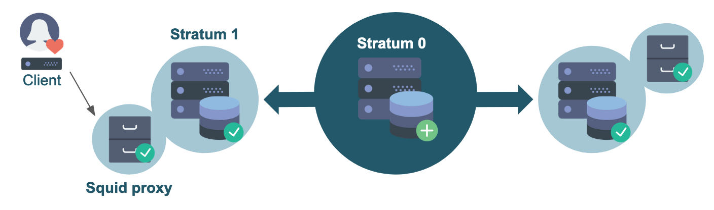

3. Stratum 1 and proxies¶
In the previous section we have set up a Stratum 0 server and a client that directly connects to the Stratum 0. Although this worked fine this is not recommended, since this setup is neither scalable, nor very reliable, nor secure: it is a single point of failure, too open in terms of connectivity, and it will have to serve all clients on its own.
Therefore, we will show how all these points can be addressed by adding a Stratum 1 server and a caching proxy server.
Quick reminder: a Stratum 1 is a replica server that keeps mirrors of the repositories served by a Stratum 0. It is a web server that periodically synchronizes the contents of the repositories.
In contrast to the central Stratum 0 server you can have multiple Stratum 1 servers, and it is recommended to have them geographically distributed, so that clients always have a nearby Stratum 1.
How many Stratum 1 servers you need mostly depends on the number of clients and how they are distributed geographically, but often a few is already sufficient.
Scalability and performance can be improved with proxies, which we will discuss later in this section.

3.1 Setting up the Stratum 1 server¶
3.1.1 Requirements¶
A Stratum 1 server has similar requirements as a Stratum 0 in terms of resources.
In addition to port 80 (for the Apache web server), port 8000 also has to be accessible for a Stratum 1 (for the Squid proxy frontend).
Furthermore, you need a (free) license key for Maxmind's Geo API, which you can obtain by signing up for an account. This is used by CernVM-FS to allow clients to determine which Stratum 1 server is geographically located closest.
3.1.2 Installation¶
For the Stratum 1 you need to install the following packages:
# sudo yum install -y epel-release # only needed on CentOS 7
sudo yum install -y https://ecsft.cern.ch/dist/cvmfs/cvmfs-release/cvmfs-release-latest.noarch.rpm
sudo yum install -y cvmfs-server squid
# sudo yum install -y mod_wsgi # on CentOS 7
sudo yum install -y python3-mod_wsgi # on CenOS 8
This is:
cvmfs-server: the CermVM-FS server package (just like for Stratum 0);mod_wsgi: an Apache module that provides a WSGI compliant interface for hosting Python based web applications within Apache, which is required by CernVM-FS to query the Geo API (more on that later);squid: the Squid proxy package;
3.1.3 Configuring Apache and Squid proxy¶
On the Stratum 1, we will be running Apache with a Squid frontend (reverse proxy).
The Apache web server will be listening internally on port 8080, while the Squid proxy needs to listen (externally) on port 80 and 8000, which are the default Stratum 1 ports.
Apache configuration¶
First, we modify the Apache webserver configuration, by editing /etc/httpd/conf/httpd.conf and change the default:
Listen 80
Listen 127.0.0.1:8080
Squid configuration¶
Next, we replace the default contents of /etc/squid/squid.conf with the following:
http_port 80 accel
http_port 8000 accel
http_access allow all
cache_peer 127.0.0.1 parent 8080 0 no-query originserver
acl CVMFSAPI urlpath_regex ^/cvmfs/[^/]*/api/
cache deny !CVMFSAPI
cache_mem 128 MB
To clarify:
http_portspecifies on which ports Squid will listen for HTTP requests;http_accessspecifies access restrictions for HTTP traffic (none, in this case);cache_peerspecifies that the Apache web server is listening on port 8080;aclspecifies the access list for CernVM-FS: only paths under/cvmfs/*/api/are relevant;cachespecifies which paths should be cached by the Squid proxy (only paths that match the regular expression on the line above);cache_memspecifies the amount of memory that Squid is allowed to use;
For more information, see the Squid documentation: http://www.squid-cache.org/Doc/config/.
Start & enable services¶
Finally, we start and enable both the Apache and Squid services:
sudo systemctl start httpd
sudo systemctl start squid
sudo systemctl enable httpd
sudo systemctl enable squid
3.1.4 DNS cache¶
As a Stratum 1 server does a lot of DNS lookups, it is recommended to have a local DNS caching server on that same system.
We will not discuss this topic any further here, but you can use dnsmasq, bind, or systemd-resolved.
See for instance this tutorial for setting up systemd-resolved.
3.1.5 Creating the Stratum 1 replica¶
With all the required components in place, we can now really set up our Stratum 1 replica server.
Create and add Geo API key (optional)¶
We first add our Geo API key to the CernVM-FS server settings, by creating it and then running these commands:
echo 'CVMFS_GEO_LICENSE_KEY=YOUR_KEY' | sudo tee -a /etc/cvmfs/server.local
sudo chmod 600 /etc/cvmfs/server.local
Replace YOUR_KEY with your Geo API license key; see https://www.maxmind.com/en/accounts/YOUR_ACCOUNT_ID/license-key!
Note that this is not strictly required for the sake of this tutorial, but it's highly recommended.
Add repository master public key¶
We also need to have the public master key of each repository we want to mirror to be available on our Stratum 1.
This can be done by copying the .pub file(s) from /etc/cvmfs/keys on the Stratum 0 server to
/etc/cvmfs/keys/organization.tld/ (note the extra level!) on the Stratum 1 server, just like we did on the client.
Create replica¶
Now we make the replica by giving the URL to the repository on the Stratum 0 server
(which is always like http://host:port/cvmfs/repository, with the :port part optional)
and the path to the corresponding public master key:
sudo cvmfs_server add-replica -o $USER http://<STRATUM0_IP>/cvmfs/repo.organization.tld /etc/cvmfs/keys/organization.tld/
Replace the <STRATUM0_IP> part with the IP address of your Stratum 0 server,
and adjust for the name and domain of your CernVM-FS repository!
Executing the add-replica command should produce output reporting on the steps being performed,
and only take a couple of moments to complete.
If no output is produced and the command seems to be hanging, make sure that port 80 on your Stratum 0 server is accessible via the IP address you are using!
Bypassing the Geo API license key¶
If you prefer not to create a MaxMind account and Geo API license key for the sake of this tutorial,
you can bypass the "CVMFS_GEO_LICENSE_KEY not set" error message
produced by cvmfs_server add-replica by setting the server variable CVMFS_GEO_DB_FILE
to NONE before running the command:
# only do this if you do not want to provide a Geo API key (not recommended!)
echo 'CVMFS_GEO_DB_FILE=NONE' | sudo tee -a /etc/cvmfs/server.local
Remove the replica¶
If you ever want to remove the repository replica again, you can use the rmfs subcommand in the same way as on Stratum 0:
sudo cvmfs_server rmfs repo.organization.tld
3.1.6 Manually synchronize the Stratum 1¶
Now that the Stratum 1 has been registered, we should try to do a first synchronization. You can do this by running the following command:
sudo cvmfs_server snapshot repo.organization.tld
The output should end with something like:
Serving revision 2
Fetched 2 new chunks out of 3 processed chunks
3.1.7 Adding a synchronization cron job¶
Whenever you make changes to the repository, the changes have to be synchronized to all Stratum 1 servers.
This task can be automated by setting up a cron job that periodically runs cvmfs_server snapshot -a, where -a does the synchronization for all active repositories. This option will give an error if no log rotation has been configured for CernVM-FS, so we first have to create a file /etc/logrotate.d/cvmfs with the following contents:
/var/log/cvmfs/*.log {
weekly
missingok
notifempty
}
Now we can make a cron job /etc/cron.d/cvmfs_stratum1_snapshot for the snapshots:
*/5 * * * * root output=$(/usr/bin/cvmfs_server snapshot -a -i 2>&1) || echo "$output"
3.2 Setting up a proxy¶
If you have a lot of local machines, e.g. an HPC cluster, that need to access your repositories, you also want another cache layer close to these machines.
This can be done by adding one or more Squid proxies between your local machine(s) and the Stratum 1 server(s). It is recommended to have at least two proxies, for reliability and load-balancing reasons.
3.2.1 Requirements¶
Just as with the other components, the Squid proxy server does not need a lot of resources. Just a few cores and few gigabytes of memory should be enough. The more disk space you allocate for this machine, the larger the cache can be, and the better the performance will be.
Note that this system will only store a part of the (deduplicated and compressed) repository, so it does not need as much storage space as Stratum 0 or Stratum 1 server.
3.2.2 Installation¶
On the proxy server only Squid needs to be installed:
sudo yum install -y squid
3.2.3 Configuration¶
The configuration of a standalone Squid proxy is slightly different from the one that we used for our Stratum 1.
You can use the following template to set up your own Squid configuration for your proxy server (in /etc/squid/squid.conf):
# List of local IP addresses (separate IPs and/or CIDR notation) allowed to access your local proxy
acl local_nodes src YOUR_CLIENT_IPS
# Destination domains that are allowed
#acl stratum_ones dstdomain .YOURDOMAIN.ORG
#acl stratum_ones dstdom_regex YOUR_REGEX
# Squid port
http_port 3128
# Deny access to anything which is not part of our stratum_ones ACL.
http_access deny !stratum_ones
# Only allow access from our local machines
http_access allow local_nodes
http_access allow localhost
# Finally, deny all other access to this proxy
http_access deny all
minimum_expiry_time 0
maximum_object_size 1024 MB
cache_mem 128 MB
maximum_object_size_in_memory 128 KB
# 5 GB disk cache
cache_dir ufs /var/spool/squid 5000 16 256
In this template, there are a two things you must change in the Access Control List (ACL) settings:
-
The line starting with
acl local_nodesspecifies which clients are allowed to use this proxy. You can use CIDR notation. For the sake of this tutorial, you can just replaceYOUR_CLIENT_IPSwith the IP of your client system. For example:acl local_nodes src 1.2.3.4 -
You will need to add a line starting with
acl stratum_onesto specify an ACL for the allowed destination domains. For the sake of this tutorial, we can just "hardcode" this to our Stratum 1 server viadst(destination):(where you need to changeacl stratum_ones dst <STRATUM1_IP><STRATUM1_IP>with the IP address of your Stratum 1 server)
The stratum_ones ACL you defined is used to specify that the Squid should only cache the Stratum 1 server,
via the first http_access deny line.
More information about Squid ACLs can be found in the Squid documentation.
Finally, there are some settings regarding the size of your cache. Make sure that you have enough disk space for the value that you provide.
3.2.4 Verifying Squid configuration¶
To verify the correctness of your Squid configuration, you can run:
sudo squid -k parse
When things look OK (no errors or warnings are printed, exit code zero), you can start and enable Squid.
3.2.5 Starting and enabling Squid¶
To start and enable Squid, run:
sudo systemctl start squid
sudo systemctl enable squid
3.3 Re-configuring the client¶
Now that we have a Stratum 0 server, a Stratum 1 server, and a Squid proxy, we have the (minimal) infrastructure in place for a production-ready CernVM-FS setup.
So we can now configure our client properly, and start using the repository.
In the previous section we connected our client directly to the Stratum 0. We are going to reuse that configuration, and only need to change two things.
3.3.1 Connect to the Stratum 1¶
We used the URL of the Stratum 0 in the file /etc/cvmfs/config.d/repo.organization.tld.conf. We should now change this URL, and point to the Stratum 1 instead:
CVMFS_SERVER_URL="http://<STRATUM1_IP>/cvmfs/@fqrn@"
Replace the <STRATUM1_IP> part with the IP address of your Stratum 1 server!
When you have more Stratum 1 servers inside the organization, you can make it a semicolon-separated list of servers. The Geo API will make sure that your client always connects to the geographically closest Stratum 1 server.
3.3.2 Use the Squid proxy¶
In order to use the local cache layer of our proxy, we have to instruct the client to send all requests through the proxy.
This needs one small change in /etc/cvmfs/default.local, where you will have to replace DIRECT
with IP address of your Squid proxy service, plus the (default) port 3128 at which Squid is running:
CVMFS_HTTP_PROXY="http://<PROXY_IP>:3128"
Replace the <PROXY_IP> part with the IP address of your Squid proxy server!
After changing the local configuration file, make sure to reload the CernVM-FS client configuration:
sudo cvmfs_config reload repo.organization.tld
More proxies can be added to that list by separating them with a pipe symbol.
For more (complex) examples, see the CernVM-FS documentation.
Exercise¶
1) Set up a Stratum 1 server. Make sure that it includes: - a proper Geo API license key; - cron jobs for automatically synchronizing the database and updating the Geo database; - properly configured Apache and Squid services;
2) Set up a separate Squid proxy. Though it is recommended to at least have two in production, one is enough for now.
3) Reconfigure the client that you set up in the previous section and make sure that it uses your Stratum 1 and Squid proxy. - #TODO: reuse or set up a new client?? Add firewall rules to the Stratum 0?